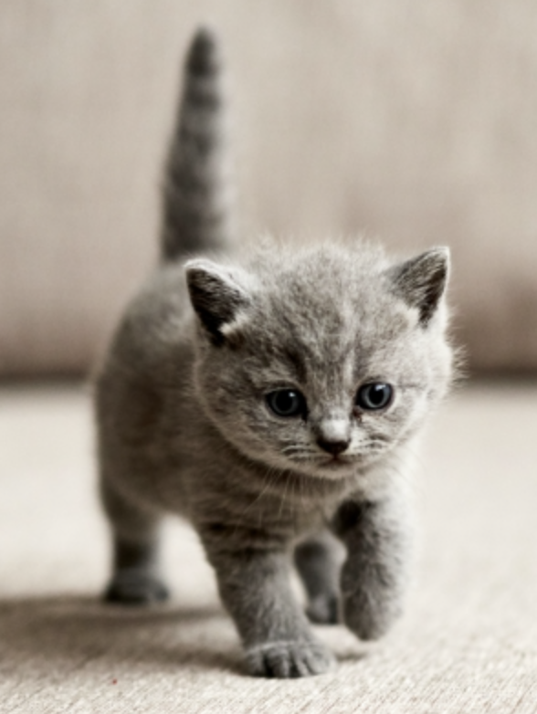

But Redux was already so smol like this kitten!
Instructions:
Build createStore(). It stores the state. The state is reassignable.
Write a method inside the store called getState(). It returns the state.
The store needs to accept a reducer as an argument, which is used to set the initial state and create new state.
Write a method called dispatch(). It invokes the reducer with the current state and an action. It then reassigns the state.
Test your code so far. Write a reducer that sets the initial state to { cats: ['Meowser', 'Charlie', 'Fluffanilla'], selectedCat: 'Meowser' }
Test your code with an action. Try adding a cat. Update the reducer to handle this action.
Can you make a more dynamic/flexible action, say with an action creator so you can add any name you like?
For practice, add another action: one that changes the selected cat, but only if it's in the cats list.
BONUS: Write a function combineReducers(), which takes an object as an argument. The object maps reducers to keys. The combined reducer returned by the function will then be provided to createStore().